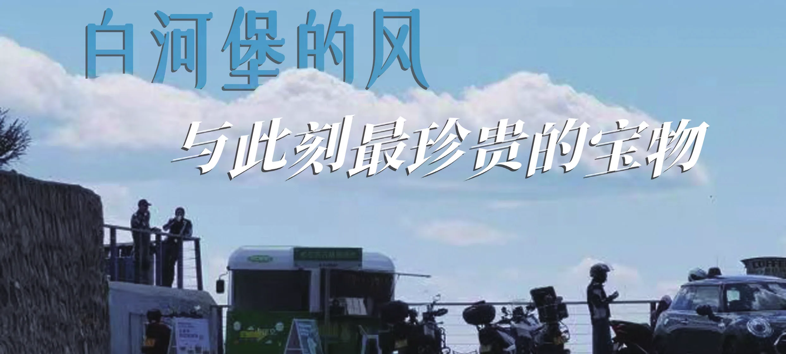
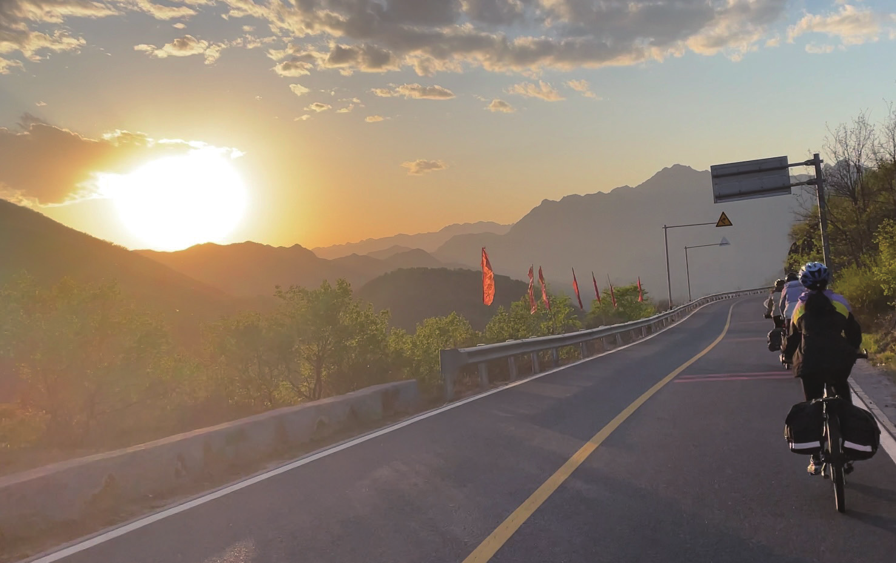
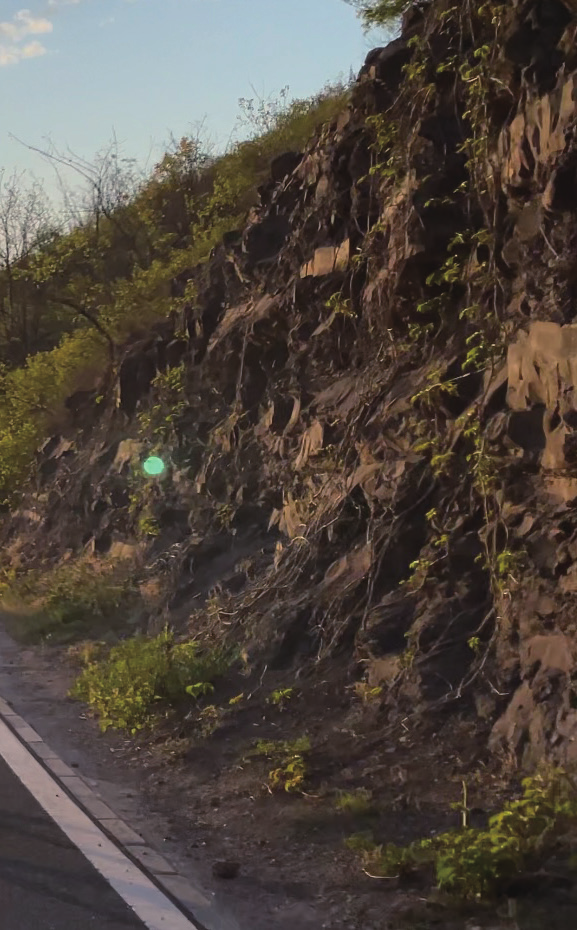
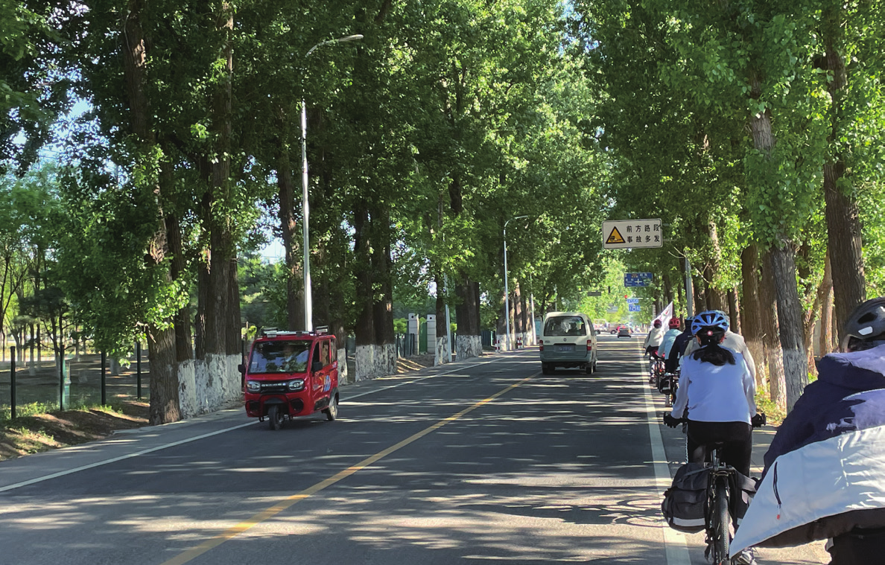
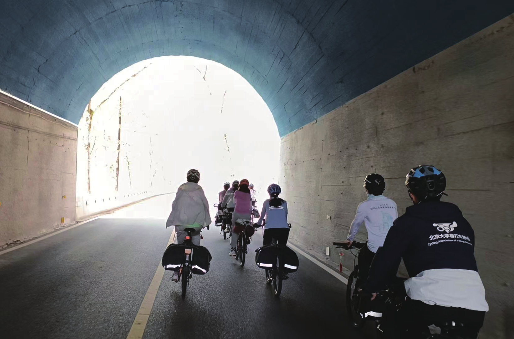
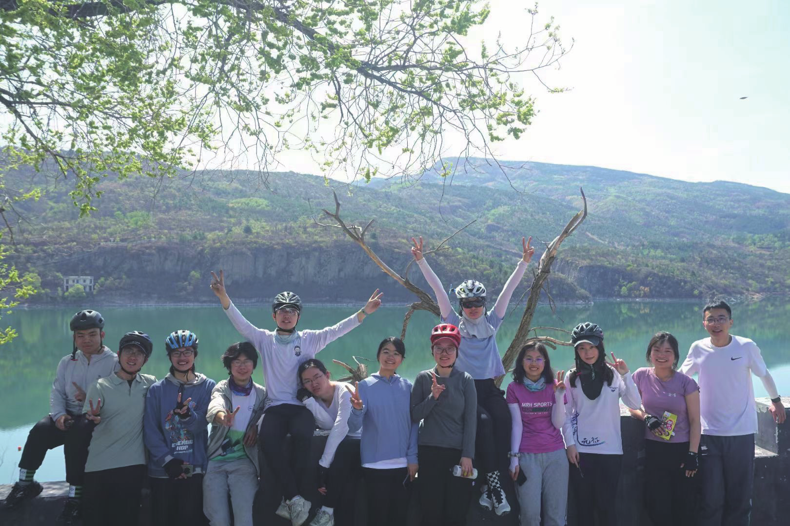

白河堡的风，与此刻最珍贵的宝物
原刊101












我越来越发现，骑车这个事情啊，真的会上瘾。自2020年冬天潭柘寺一别，已经两年多过去了。近半年来，我能明显感觉到自己骑车的瘾又犯了，具体表现包括但不限于：疯狂看自己以前的足音、重温我们到现在还没完结的暑期日志、翻聊天记录搜出存着暑期照片的百度网盘、看暑期队医组的每日总结、在团群里发疯等等。
当骑车的日子过去得久了，已然完全忘了爬坡时思考人生有多么痛苦，只记得骑车追风的感觉有多么快乐的时候，我知道我又该回来了。该回来，却不是那么容易回来。虽然我偶尔会后悔没有把第一份工作选在北京，但后悔完还是得面对北京上海之间客观的地理间隔。
我的第一个目标瞄准了冬游，从苏州出发简直是美梦照进现实，于是那段时间每天都在上头，跟同事们念叨冬游、在团群里发疯、加了dudu微信生怕错过冬游消息、看好了车店打算直接去苏州提车、算好了请假时间甚至想好了请假话术……然而，当这股上头劲儿过去之后，我退缩了。
我对外的解释是，当时疫情太严重了，担心在路上阳，担心刚阳完运动有危险等等。然而只有我自己知道，疫情只不过为我内心早已萌生的退堂鼓助了最后一力。真正使我犹豫的是，我不确定自己是否还能从冬游这样的骑行经历中获得我所期待的快乐。
毕竟，工作后的假期是很珍贵也很难得的，特别是一周多的“长假”，是恨不得每天行程塞满，充分体验每一分钟的。而把这一周多的时间全部用来骑车，每日重复着类似的日程，住宿餐标想必已不能习惯，风景可能也不会经常那么好看，同行的可能也都是已经有代沟的小朋友，我们的“快乐点”可能已经完全不一样了……这样的一段旅途到底能不能回馈我对假期的期待，我心里实在是有大大的疑问。
就这样，一个在疫情肆虐中难熬的冬天过去了。事实证明，上头是一时的，下头也是一时的。在春暖花开之际，我那暂时被压下去的瘾又起来了。
难得五一假期没有什么特别的安排，我开始琢磨着回北京见见老朋友，顺便骑个拉练。印象里往年五一期间北京已经很热，车协的夏天也快到尾声，没什么好骑的拉练了。然而今年公布的会历让我眼前一亮，我竟然还能赶得上双日！
虽然没能成功把团里的老骨头们忽悠出来，但我还是决定早早报名以证决心，毕竟等报名帖在论坛上挂久了再退出就有点丢人了。相比冬游，五一期间的双日对我而言无疑在时间性价比上大大提高了。除了五一期间上海到北京的高铁票出乎意料的难抢之外，我的双日报名几乎没有遇到什么阻力。
同组没有熟人并不是我担心的点，因为我知道双日的小队机制决定了我一定有机会跟组里的小伙伴彼此熟悉；体力也并不是我担心的点，一方面因为日常有做一些健身，对自己的体力有一点蜜汁自信（打脸现场了属于），另一方面想着反正一共就两天，队长啊随队理事啊之类的总会想办法把我弄上去再弄回来的（笑死）。
其实这次报名双日还有更重要的一点原因，也是近半年来一直在困扰着我的问题：我究竟是否依然年轻？当我迈过了26岁这道门槛，对年龄的焦虑前所未有地笼罩了我。冬游意外的退缩也加重了我的迷茫。
3年前潭柘寺归来，我写下“那些我曾经拥有的疯狂，那些欢笑、泪水、风声与歌声，它们再一次属于了我。我知道，它们将永远属于我。”3年后，我还能不能坚定地说出“它们永远属于我”这句话？
我好像不确定了。究竟什么是年轻？究竟我是否依然年轻？我带着问题来，心里却没有预设答案。我只知道，答案可能就在这次旅途中。
对“我是否依然年轻”的第一个考验就是分组。分组结果公布那天我在客户处开会，看到一个顶着史迪仔头像的人加我微信，我惊喜地想可能是有分组结果了；紧接着这个人把我拉进了“白河，我们来了！”的微信群，瞬间惊喜变惊吓了。
我足足有半个小时没听进去开会内容，脑子里一直在反复确认我是不是看错了。看到群里的大家都在欢呼雀跃，我实在是有点跟不上这个氛围，甚至萌生了一点退出的念头。但是呢，分组后退出意味着要罚跑，作为从来没有被罚跑过的人，我不能允许这种晚节不保的事情发生。
于是在经历了内心的激烈挣扎，含泪确信“当十渡去程前旗带队一路缓下”的梦想破灭之后，我决定硬着头皮上了。挣扎过程中我在想，如果是年轻时候的我，大概会说“怕啥，上就完了”，那我总不能现在就认输。接下来就是一段无心工作每天盼着五一假期的日子，包括在团群里众筹拉练物资，翻出我的17会服和暑期衫，淘宝一些新装备，思考着两天要穿什么拍什么样的照片等等，完全忘记考虑“坡能不能爬上去”这个关键问题，仿佛就是去一场普通的旅游。
这无疑印证了开头那句“已然完全忘了爬坡时思考人生有多么痛苦，只记得骑车追风的感觉有多么快乐”了。周五拉着小哥陪我去出摊地瑟瑟发抖了一下午，第一次见到了白河B1组的小伙伴和超级可爱的小队长，网友面基了dudu和她的小男朋友，托信斯言借来的20暑期车被挂了又被推荐去借纹水的19暑期车（怎么听起来更不靠谱呢），自我介绍还得回忆下自己到底是哪级的，但在敏锐发现组里有跟自己年龄差不多的朋友后感到一丝欣慰。
晚上又把五哥、信斯言和小弟一起抓出来去聚了餐，在大家的质疑声中自信满满地坚持驮相机上路……这一切让我感到亲切而满足，属于我的快乐假期真的开始了。出发前夜久违的彻夜失眠，虽然“彻夜”也就是1点到4点半的时间。恍惚间我想起来在哪里看过说失眠不影响第二天骑车的，但一下子又有点分不清这句话说的是不影响第二天骑车还是第二天高考了。
总之，很快等到了出发时间，虽然被约好的滴滴放了鸽子，但我还是幸运地打到了一辆车并掐点来到了集合地。跨上车出发的那一刻，我明显感觉身体里的血液又久违地沸腾了起来，整个人都兴奋了起来，跟六年前的自己好像并没有什么两样。我忍不住拍了一段小队在四环上迎着朝阳骑行的视频发到团群里，引来了一众羡慕，而我终于又一次成为了这支令人羡慕的骑行队伍的成员。
一切在踏上黄花城第一个坡之前都是完美的，我对自己在北京市区的骑行表现十分满意，也开始与组员聊起天。期间也被一墨拜托给秋小果放《飞》，谁能想到这首歌从第一次听到听腻就花了两天。看着前旗平路不到20的均速，我还嚣张地想：看来我的回程前旗稳了。
然而，当坡度从0变成1的那一刻，简直是发生了质变，我眼睁睁地看着前旗前助这一对好搭档若无其事地保持着踏频越飞越远，而我好像腿不听使唤似的一直往后掉。我能感觉到自己后面压了一堆人，其中包括后旗，但是很长一段路并没有人超过我。我一方面感激大家对老年人真是太友好了，另一方面暗暗心惊大家的体力已经到了可以按照别人的节奏爬坡的“深不可测”的程度了。
被大家尤其是后旗紧跟的我完全不敢停下来脱衣服和喝水，只好费九牛二虎之力继续往前蹬，边蹬边想怎么还没人扎胎掉链子（不是）。又爬了一段回头一看，后旗不见了！还有这种好事，我立马停下来休息。
后来听说是后旗没吃饱矬了，真是牺牲一人造福大众的善事（乐）。黄花城的矬首先让我彻底放弃了当回程前旗的白日梦，并让我对接下来的四海大坡陷入了深深的恐惧。这虽然并不是我第一次爬四海，但上次爬是六年前刚从暑期回来的巅峰时期，同行的有我团五哥等一众体霸，而且我隐约记得，我们好像是骑了个悠闲三日来着。
所以，当我们正式踏上四海坡道时，我感觉我在气势上已经被打败了，索性摆烂压后旗慢慢挪，累了就停下来休息，骑不动了就坐等听说很会推人的随队理事来推（笑死）。不得不说，随队理事沐阳同学真的很有本领，被他推着我感觉我又活了。当然，谁能既要马儿跑又要马儿不吃草，沐阳的本领也有耗尽的时候，在他的cd期，队医椰汁也发挥起了她的本领，没想到她小小的身体大大的能量，推起人来也很稳。
就在这样你歇我往，或者一起歇的过程中，我们奇迹般地苟上了四海坡顶，迎接我们的是壮阔的风景和清爽的柠檬茶，以及一群或开车或骑摩托登顶而带着惊异眼光看着我们的游客。我感觉从年龄上我应该属于他们的阵营，但我现在成了被他们赞叹的对象，这是否说明我依然年轻呢？
爬上四海坡顶对我来说意义非凡，因为这意味着我绝对不会坐车回北大了，我不把四海这个海拔的坡亲自放掉简直死不瞑目好嘛！放坡真的是大自然的馈赠，虽然拉练相比暑期还是会压速度，但也能逼近50了，回想起暑期路上放坡50+单手拍视频的日子，青春飞扬的快感又一次充溢了我的脑海。
我有时觉得人真的是很别扭的生物，同样的东西，轻易得到和努力得到带来的快乐却是不一样的。其实明明可以坐车上坡顶再骑车放坡下来，其实明明可以开车两千公里遍赏一路美景，但如果没有付出爬坡的努力，没有付出一路的艰辛，就不会珍惜收获的一刻，不会有终于抵达的骄傲。
也许青春就是这样一个付出与收获的过程，你只有付出青春，才能收获青春，从这个角度而言，青春是易得的，却也是没有捷径的。可能是因为很久不习惯骑车的姿势，可能是因为刚借来的车还不太适应，可能是因为午饭休息后肌肉还需要恢复期，总之从午饭点出发后的一段路简直达成了我最痛苦的骑车体验，感觉全身上下没有哪块是不疼的。
然而这个点打货拉拉也晚了，我只好认命地继续往仓米古道骑去，一边盘算着第二天直接货拉拉到最后一个坡顶。本以为我的仓米古道爬坡之旅会一直沉浸在这样的痛苦中，但在后旗小分队有本领的沐阳、椰汁和打午饭前站回来的一墨的接力推人下，竟然也就说说笑笑地苟上去了。
虽然不知道是不是真的“没有和队友一起爬不上的坡”，但至少“没有队友我肯定爬不上这个坡”，这让我打心底里觉得，和B1组的大家一起骑车真的很快乐，很快乐。当然，如果我体力好点就更快乐了。快乐归快乐，浑身的酸痛也无时无刻不在提醒着我，该叫货拉拉了。
于是从晚饭开始我就在研究，想着至少坐车到第二天午饭点，少爬俩坡还能顺便打个午饭前站。在我看来，这样的安排可以让我“体面地走”，不用明天再狼狈地往坡顶挪了。我我把想法告诉了队长，队长很体贴地说如果我觉得骑回去的痛苦大于快乐，她是能理解的。
这让我想起暑期路上，有一天强度很大且酷热无比，我真是一百个不想骑了只想坐车走，然而团儿无论如何不同意。现在好像真的比那个时候“体面”了，却也似乎少了点什么。还没等我想清楚少了什么，五一期间的货拉拉就给了我当头一棒：这么偏根本没人接单！
甚至一个司机还专门接了我的单就为了打电话告诉我这个残忍的事实。一瞬间我的体面没了，我不得不重新面对需要全程骑回去这个悲惨的事实。不过有了仓米古道上化痛苦为快乐的经历，我预感好像也不会那么绝望了。
晚上的组会让我一度梦回2017双日A1琉璃庙，我们围坐在一起分享着今天的骑行感受，六年前的人和六年后的人在类似的场景下涌生出类似的感想，让我感到有些恍惚。组会上我说，希望大家回去有空的话都能写写足音，把现在的感想记录下来。毕竟这么珍贵的感受，过几年忘记了多可惜呐。
就像我现在，舍不得放弃每个小细节，想把这两天的点点滴滴定格在这篇足音之中。我知道现在的投入是值得的，因为在之后的很长一段时间，这篇足音都会成为我追忆青春的新素材，成为我琐碎日常中闪耀的光，成为支持我走出低落情绪的力量。事实证明我前夜的预感是对的。
第二天沿白河骑行的那段缓上简直达成了我心目中京郊拉练的风景之最，而休息了一晚上的我在缓上路段体力也完全跟得上，迎风骑得酣畅淋漓。在白河堡水库前，我的天使钢炮主动跑来实现我的国王愿望，为我拍了好几张扛前旗（伪）的帅照，再一次让我感慨没货拉拉回去真是太好了。
回程几个坡相比去程还是友好太多了，后旗小分队分工也愈发明确，有负责上坡推我的沐阳，有负责缓上推我的一墨，有拿我练推人从入门到熟练的黑胡思，有负责陡坡推车的我自己（不是）。大家的口头禅也变成了“你好有本领”，“你也好有本领”，“你们都太有本领了”，“我没本领了”，“让我来发挥下本领”。
在后旗小分队一众有本领的人各显神通下，回程的坡不知不觉就在笑声中爬完了。回程路上的快乐体验却让我感到一丝后怕：如果前一天晚上有司机接了我的单，今天的我想必就会错过美丽的白河堡和有趣的爬坡体验。如果不是碰巧赶上五一货拉拉没人接偏单，我也许真的会选择一条与年轻的体验背道而驰的路了。
我忽然意识到，青春本质上可能就是一种选择，有人年纪轻轻却有一颗老态的心，有人年已迟暮却选择不断挑战自己。到了我这个年龄，或者比我再大一些的年龄，可能正是这个选择偏好的分水岭。是选择挑战极限超越自我，还是选择安逸闲适稳稳的幸福，取决于客观的年龄和身体状况，但更取决于自己主观的决定。
令我庆幸的是，这次我终究是选择了出发，选择了重温青春的体验，选择了挑战自己的极限，选择了收获完整的旅程。也许在未来的日子里，我不会每次都做出这样的选择，我也会逐渐习惯于中年人的安逸。但至少，当一群中年人望着骑行队伍感叹自己青春不再时，我还可以骄傲地说我也能够做到。
因为这个世界上有个地方叫北大车协，它好像每年都在举办同样的活动，运行着同样的机制，去同样的拉练地点，在执委会上讨论同样的问题；但是这些活动每年都有不同的人参与，有不同的人在这里点亮了自己的青春，收获了属于自己的情感体验。所谓流水的会员，铁打的车协；难寻少年时，总有少年来。
而我只要选择回到这里，就能在熟悉的机制中被熟悉的情感包围，就能跟着当届的车协少年一起，回到那个意气风发的年代，就能找回属于我的青春岁月。在白河堡的起伏间，我想通了这一点。看着眼前迎风飘扬的会旗，我忽然心生感慨：是啊，已经六年过去了，前旗上的字早已不再是“西南景盛，单车万象跨四省”了，吹在我身上的风早已不再是云贵高原的季风了，身边跟我一起追风的人也早已不是当时的那群人了；可是，至少我还能把当年的暑期衫翻出来洗干净，至少我还能用白河堡的风代替西南的风，再次将暑期衫填满，至少我还能继续找到一群人，在他们面前高喊着我好怀念……看着17暑期衫在阳光下随风飘动的影子，我忽然止不住地流泪——是啊，已经六年过去了。
六年前，我们唱着“火热的心憧憬遥远的地方”；六年后，我唱着“年轻时代你会永远难忘”。也许终将有一天我也不会再年轻，可我至少保留了选择年轻的权利。不知不觉间这份选择权已成了我此刻最珍贵的宝物。
2023.5.5